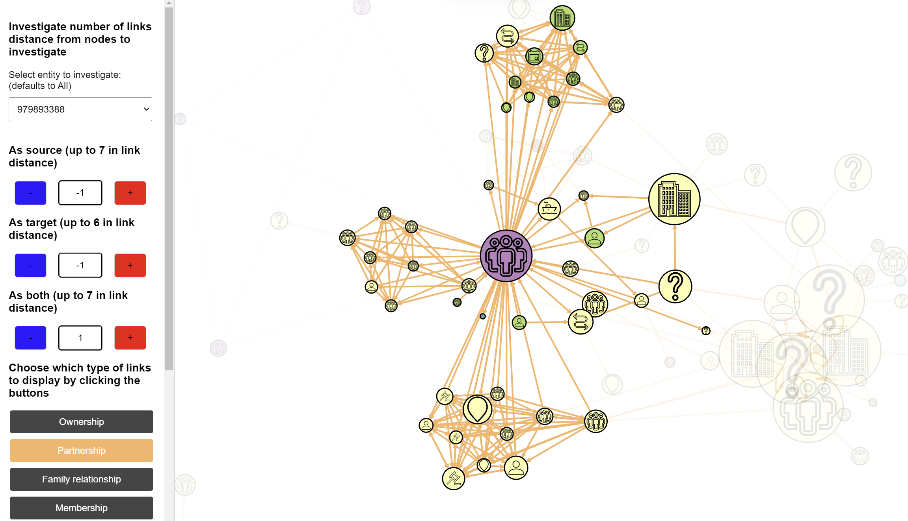
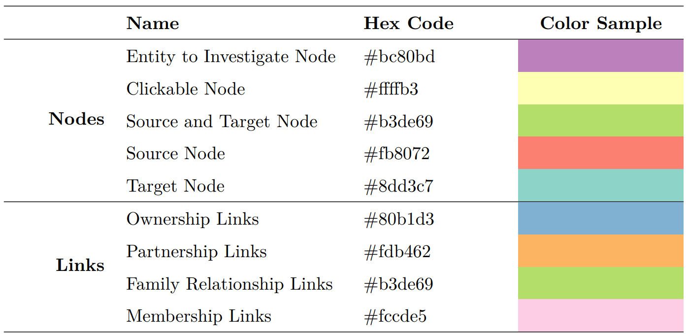
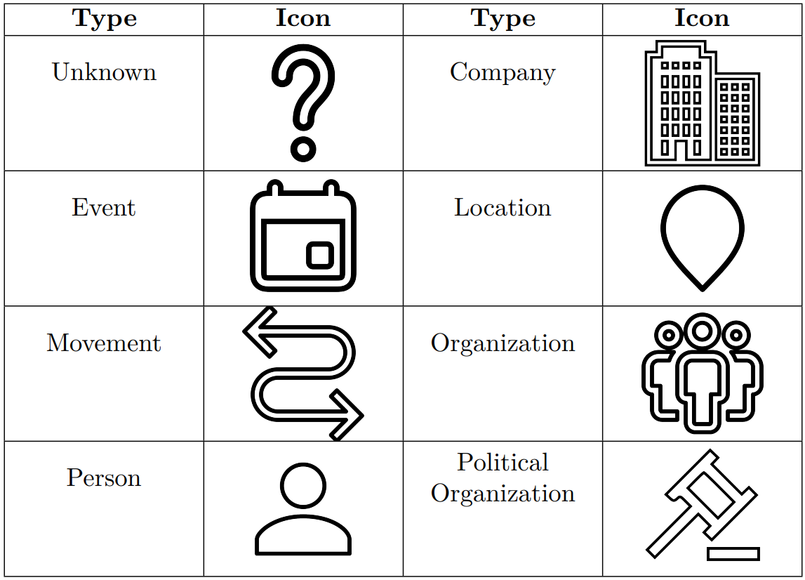

This project addresses the VAST Challenge 2023 Mini-Challenge 1, focused on combating illegal, unreported, and unregulated (IUU) fishing. FishEye International, an organization dedicated to protecting marine species, gathers online news articles about fishing and the marine industry. Using natural language processing, they extract entities and relationships to create a knowledge graph for investigating suspicious activities.
The challenge was to develop an interactive visual analytics tool that helps analysts explore contextual information around suspected entities without being overwhelmed by data. The tool needed to be dynamic and interactive, emphasizing relevant connections to identify companies potentially engaged in illegal fishing.
Four specific entities were designated for investigation: Mar de la Vida OJSC, 979893388, Oceanfront Oasis Inc Carrie, and 8327. The visualization was built using JavaScript and D3.js to create an interactive network graph with multiple exploration features, allowing analysts to discover patterns and relationships that might indicate illegal fishing activities.
A live version of the project is aviable here
This project marked my first experience with the D3.js library, which revealed very helpful for my Master Thesis's project. The reliance solely on JavaScript for data manipulation limited options and made the process less efficient compared to using a dedicated API as i was used while working.
The most challenging aspect was the initial data exploration phase. Without a clear pattern identified beforehand, the project evolved into building a comprehensive "toolbox" for visual data exploration. This approach taught me that effective visual analytics can emerge through iterative development and user interaction rather than being limited to predetermined analysis.
Through visual exploration, I learned to identify key patterns indicating potential illegal activity: highly interconnected clusters of entities and nodes with numerous incoming and outgoing connections. The entity 979893388 emerged as a central node connected to multiple clusters, particularly through partnership links, revealing a network of major entities including Mar del Oeste Pic, Ocean Fisheries Llc, and SeaSpray Wave SRL Solutions.
Selecting an appropriate color palette was crucial for intuitive navigation. Using ColorBrewer 's qualitative scheme with nine distinct colors, I learned to balance visual clarity with information density. Colors distinguished between node states (entity to investigate, clickable nodes, sources, targets) and link types (ownership, partnership, family relationship, membership).
Implementing multiple interaction methods taught me about progressive disclosure in UI design. The left panel provides filtered views and distance-based exploration, left-clicking highlights immediate connections, right-clicking expands nodes to reveal sources or targets, and hovering displays detailed tooltips. Each interaction serves a specific analytical purpose without overwhelming users.
Creating the "link distance n" concept (you can read about it in the report) allowed for systematic network traversal, defining distance as the number of links needed to reach other nodes from an origin.
The VAST Challenge provided data in JSON format containing nodes with attributes (type, country, id) and links with attributes (type, weight, source, target).
Data cleaning involved removing nodes with no connections not appearing in the edges dataset, handling 1,815 nodes missing type attributes, and addressing 6,948 nodes missing country information. For duplicate IDs, the strategy prioritized retaining less frequent entity types. For example, when ID 18 appeared as both "organization" (987 instances) and "vessel" (115 instances), the less common "vessel" type was retained.
Two CSV files were created, nodes.csv and edges.csv, then merged to produce a dataset with columns for link type, weight, source, target, and attributes for both source and target nodes. Missing values were replaced with "Unknown" to maintain dataset integrity while enabling proper visualization.
The core visualization uses D3.js force-directed graphs to create an interactive network. Node sizes vary based on the number of incoming and outgoing connections, providing visual indicators of entity importance. Link widths correspond to connection weights, with thicker lines representing stronger relationships. For bidirectional links, width is determined by the highest weight between directions.
To handle multiple link types between two nodes, links are drawn at different angles ensuring simultaneous visibility of all connections. This required custom calculations based on link type presence. A dummy link with lower simulation strength connects the four entities under investigation, maintaining their grouping without interfering with navigation.
The left panel serves as the primary control interface. The "Investigate Number of Links Distance" section includes a dropdown to select entities and three numeric inputs to explore nodes at distance n, viewing them as sources, targets, or both. These inputs operate independently, resetting others when activated to streamline user interaction.
Four buttons allow filtering by link type (ownership, partnership, family relationship, membership). Clicking a button disables that link type and turns the button gray, with subsequent clicks re-enabling the links. An opacity slider controls the visibility of non-highlighted nodes and links, ranging from 0% to 100% in 10% increments, with a default of 10%.
Two select menus at the panel bottom enable specific node investigation, allowing users to view a selected node with its targets or sources. This targeted exploration complements the broader distance-based analysis.
Left-clicking a node highlights it along with all connections at link distance 1, reducing opacity for other elements. Double-clicking the same node returns to the default view. This interaction replaced an earlier implementation using red borders, as the opacity-based approach proved more effective.


Right-clicking opens a context menu with options to expand the node as a source (revealing targets), as a target (revealing sources), or both. Hovering over nodes displays tooltips showing the node name, type, country, number of sources, and number of targets. This information helps users make informed decisions before expanding nodes.
A "Show Map Legend" button in the top-right corner reveals a right panel explaining colors, symbols, interaction methods, and links between investigated entities. The button text changes to "Hide Map Legend" when the panel is visible.


After testing various color palettes, a qualitative color scheme from ColorBrewer with nine distinct colors was chosen. Four colors distinguish link types: blue for ownership (#80b1d3), orange for partnership (#fdb462), light green for family relationship (#b3de69), and pink for membership (#fccde5).
Five colors represent node states: purple for entities to investigate (#bc80bd), light yellow for right-clickable nodes (#ffffb3), lime green for source-and-target nodes (#b3de69), coral for source-only nodes (#fb8072), and teal for target-only nodes (#8dd3c7). This color assignment makes node functionality immediately apparent to users.
To prevent overcrowding with excessive colors, SVG icons differentiate entity types from SVG Repo. Icons represent unknown (?), company (building), event (calendar), location (pin), movement (arrows), organization (people), person (figure), and political organization (gavel). This iconic representation reduces cognitive load while maintaining visual clarity.
Links include directional markers indicating information flow. Bidirectional links display markers at both ends. When multiple link types exist between two nodes, they are drawn at calculated angles to ensure all connections remain visible simultaneously, preventing overlap and information loss.
Link width encoding weight proved subtle in practice, as the majority of weights fall between 0.8 and 1. However, the 88 links with weights below 0.8 provide valuable context. The decision to retain all weighted links, despite their visual similarity, prioritizes information completeness over simplified representation.

The project adopted a "treasure hunt" approach, recognizing that suspicious behavior patterns were not apparent during initial data exploration. This led to developing comprehensive tools enabling effective visual inspection rather than presenting predetermined insights.
Most interactions modify displayed data volume, except left-clicking which highlights without changing the data subset. This distinction helps users understand whether they are filtering data or simply emphasizing existing relationships. The opacity slider remains disabled during node highlighting to prevent conflicting visual states.
Please refer to sections 6 and 7 of the report for more details
Analysis revealed entity 979893388 as a central node connected to multiple clusters. When filtering for partnership links, distinct clusters emerged, including a major cluster of highly-connected entities on the graph periphery. This cluster contains several big nodes interconnected through various relationship types.
The entity maintains direct ownership links with Mar del Oeste Pic and Ocean Fisheries Llc, family relationships with png xi Line, Mar del Oeste Pic, Ocean Fisheries Llc, 903311212, and SeaSpray Wave SRL Solutions, and membership links with png xi Line, Mar del Oeste Pic, 903311212, and SeaSpray Wave SRL Solutions. Notably, partnership links do not directly connect 979893388 to these major entities.
Entity 160 demonstrates broad ownership influence over major entities except Mar del Oeste Pic. It owns png xi Line, SeaSpray Wave SRL Solutions, and has bidirectional ownership relationships with Ocean Fisheries Llc and 903311212. Membership links extend from 160 to png xi Line and Mar del Oeste Pic.
The absence of partnership and family relationship links connecting 160 to major entities suggests a pattern focused on formal ownership and membership structures. This ownership-centric network might indicate attempts to control multiple entities while maintaining distance through formal business relationships.
Mar de la Vida OJSC connects to a cluster of entities primarily through membership-type links, acting as a source with targets at link distance 1. At link distance 2, connections through node 33681303 reveal another cluster with various relationship types.
Two entities directly linked to Mar de la Vida OJSC, Ancla Azul Company Solutions and â**He, connect to larger entities previously identified, specifically Mar del Oeste Pic and SeaSpray Wave SRL Solutions. This interconnection suggests potential collaboration in illegal activities, though direct evidence remains circumstantial.
Oceanfront Oasis Inc Carriers presents a unique case with only incoming connections and no outgoing links. Its significant connection to 979893388, which owns it, places it within the broader network. At link distance 2, nodes like FishEye International, 2262, and 8787 link it to all major entities including SeaSpray Wave SRL Solutions and Ocean Fisheries LLC.
The lack of outgoing connections combined with ties to significant entities suggests it may be embedded in a network facilitating illegal fishing activities, potentially serving as a recipient or endpoint rather than an active connector.
Entity 8327 connects to two small clusters through membership and ownership links at link distance 1. At distance 2, it connects through Calvin Salas using partnership links to the cluster of large entities. Additionally, entity 160 points to 8327, providing another connection to the broader network.
This layered connectivity indicates 8327 may have ties to illegal fishing activities, though its position suggests a more peripheral role compared to central entities like 979893388 and 160.
A significant pattern associated with potential illegal activity is the presence of clusters at link distance 1 or 2 from investigated entities. These clusters suggest coordinated interactions that could indicate illicit behavior. Links between suspect entities and major highly-connected entities potentially imply illegal activities, though they may also represent legitimate business interactions.
The findings emerged through visual exploration rather than prior data analysis, highlighting the importance of interactive visualization in uncovering irregularities. While identified patterns suggest possible illegal activity, further investigation is necessary to understand connection nature and reduce uncertainty.